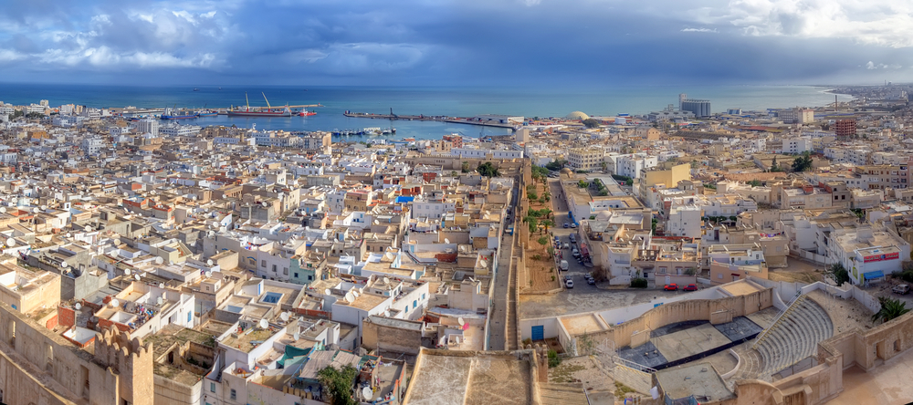

Where to Go ?
Sousse
Sitting where the Phoenician colony of Hadrumetum once stood nearly 3,000 years ago, the modern-day Sousse is a resort destination, especially popular with Europeans. Sometimes called "the Pearl of the Sahel" (referring to the central section of Tunisia's eastern shoreline), Sousse is prized for its excellent beaches. Arab-Islamic since the 7th century AD, the city has many fascinating attractions, like the 9th-century Great Mosque, and its medina is a UNESCO World Heritage Site.
Sousse is a city in Tunisia, capital of the Sousse Governorate. Located 140 kilometres (87 miles) south of the capital Tunis, the city has 173,047 inhabitants (2004). Sousse is in the central-east of the country, on the Gulf of Hammamet, which is a part of the Mediterranean Sea. The name may be of Berber origin: similar names are found in Libya and in the south of Morocco (Bilād al-Sūs).

| Hotel name | Place | adress | ***** | Cost | when to go |
|---|---|---|---|---|---|
| Abu Nawas Hotel | Tunsi | 355 Place des droits de l'Homme,Tunis 1080 | 5 stars | 300 $ | Summer |
| Majestic Hotel | Avenue de Paris, Tunis 1000 | 4 stars | 118 $ | all year | |
| Africa Hotel | 50 Avenue Habib Bourguiba, Tunis 1001y | 5 stars | 300$ | ||
| Sidi Salem Hotel | Bizert | Htel resort bizerte rte sidi salem 7000 | 4 stars | 90 $ | all year |
| Le Petit Mousse Hotel | El Mouradi Gammarth,Bizert | 3 stars | 60$ | Summer | |
| Amilcar Hotel | Carthage | 110, rue Slaheddine-Bouchoucha,Tunsia 4000 | 5 stars | 350$ | Summer |
| El-Medina Hotel | Douz | Damon salvatore | 5 stars | 250$ | Summer |
| Dar Touib Hotel | El-Haouaria | Bou Touil, Bou Toumiat,El-Haouaria | 2 stars | 30$ | Summer |
| Bellevue Hotel | Hammamet | Bulgaria 9000 Varna Goldensands | 5 stars | 250$ | Summer |
| La Residence Hotel | Hammamet west,Hammamet ,Tunis | 400$ | Summer |